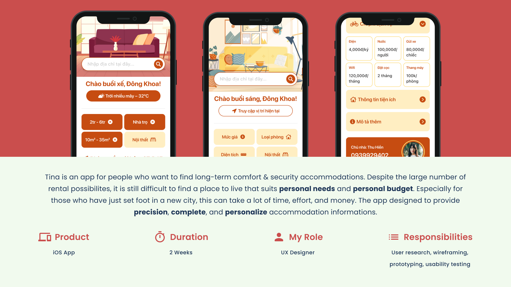
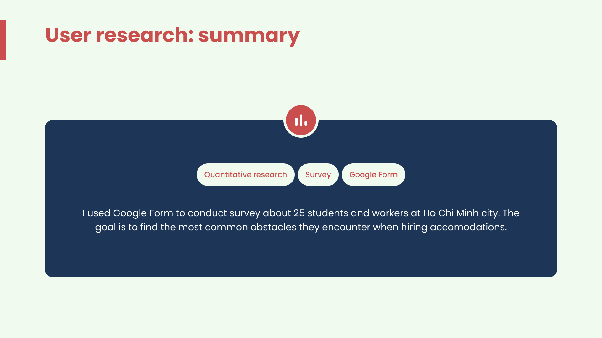
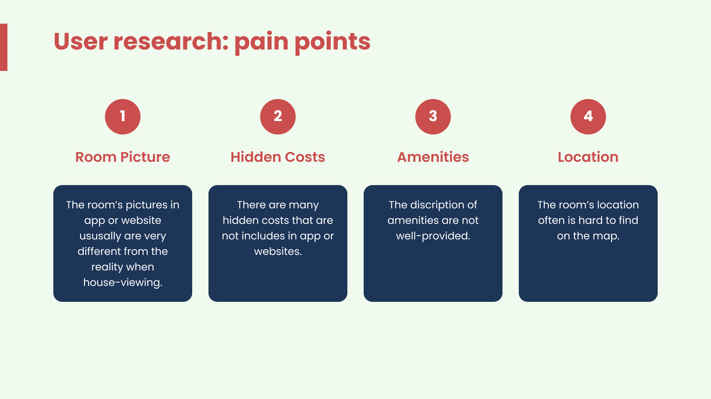
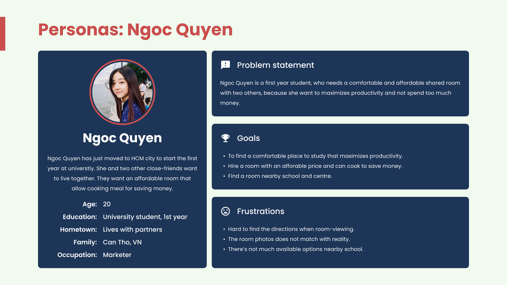
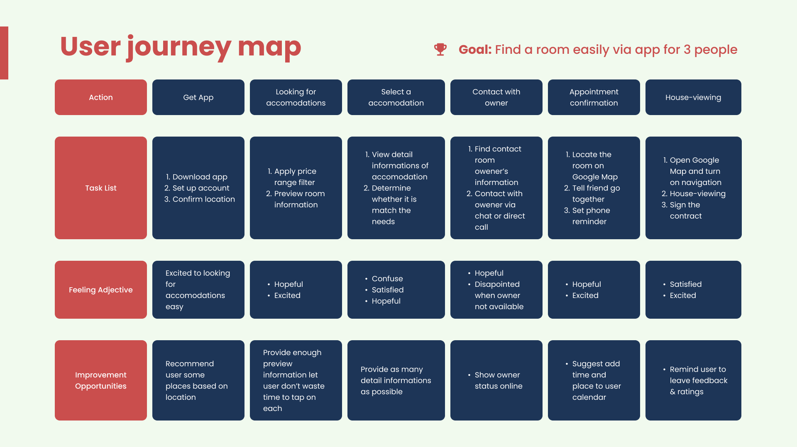
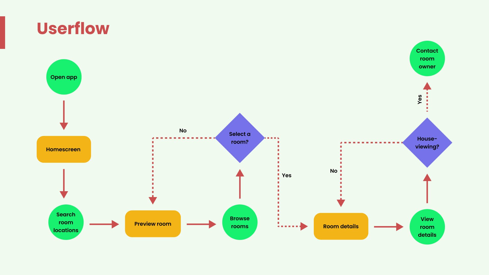
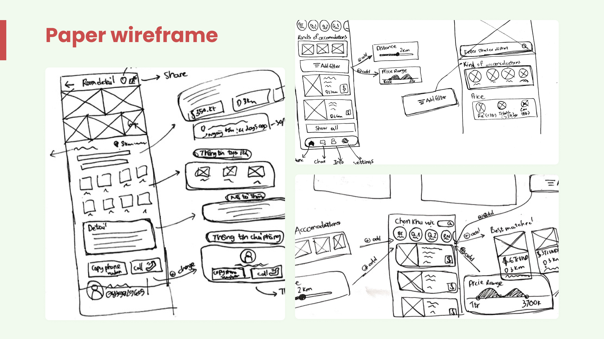
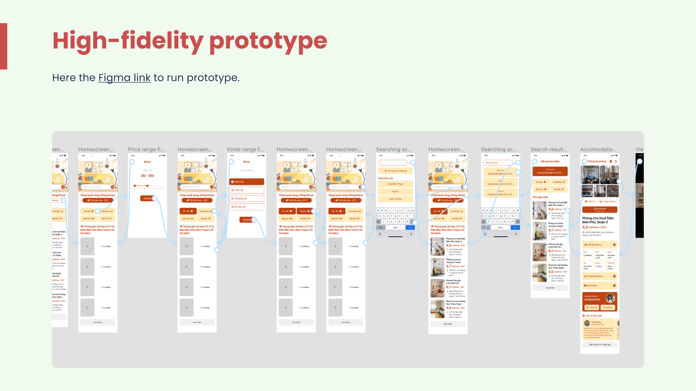

Tina: Renting a Room in Saigon Without the Surprises
A two-week project on finding somewhere to live in Ho Chi Minh City. I surveyed 25 students and workers, found four things that reliably waste their time, and designed an app where each one has a place on the screen.

Project Overview
Tina is an iOS app for people looking for a long-term room in Ho Chi Minh City. There is no shortage of listings here. The hard part is working out which of them actually fits what you need and what you can pay, and that is worse if you have only just arrived in the city.
It was a course project with a two-week brief, and I was the only designer on it. That covered the whole arc: the survey, the persona and journey map, paper wireframes, the hi-fi screens, the clickable prototype, and testing it with people.
The interface is in Vietnamese because the renters it is for are Vietnamese. Prices are written the way people actually say them out loud, so a room is "4,5 tr/phòng" rather than 4,500,000 VND.

What the Survey Found
I ran a Google Form survey with about 25 students and workers in Ho Chi Minh City, asking what gets in their way when they are hiring a room. The point was not to collect opinions about rental apps, it was to find where the wasted time goes.
Four answers came back often enough to design around. Room photos do not match the place when you turn up to view it. Costs turn up that were never in the listing. Descriptions of the amenities are thin. And the address is hard to actually find on a map.
All four have the same shape: you only discover the problem after you have already spent an afternoon on it. Every one of them costs a trip across the city. That framing is what the rest of the project is built on.


Designing for One Renter
The persona is Ngoc Quyen, a 20-year-old in her first year at university who has just moved to Ho Chi Minh City. She wants to share a room with two close friends, somewhere she can cook to keep costs down, near her campus and not too far from the centre.
Picking a sharer rather than a single renter changed what the app had to say. Three people splitting a room care about how many the place is allowed to hold, and they care about a per-person cost rather than a headline rent. Both of those ended up on the room detail screen.

Where the Search Really Ends
Mapping the journey was the thing that moved the design most, because it made one point obvious: the search does not finish inside the app. It finishes at a house-viewing, at an address, with a contract.
The map runs from downloading the app through filtering, choosing a room, calling the owner, agreeing a time and going to see it. Only the first three of those happen on screen. The last three happen in the real city, on a motorbike, with a phone in your hand.
That is where the phrase "disappointed when the owner is not available" sits on the map. Once the search leaves the screen, the app's job is to hand the trip over cleanly rather than hold on to it, which is what the location and contact decisions below are both doing.

Flow First, Then Paper
The userflow came before any screen. It is deliberately small: open the app, search a location, preview rooms, browse, open the details, decide whether to view, contact the owner. Two decision points in the whole product, and everything else is a straight line between them.
Then paper, and plenty of it, before anything went into Figma. Working by hand is fast enough that a bad layout is cheap to throw away, which is exactly what happened to the first version of the filters.


Putting the Costs on Screen
Every service cost gets its own cell on the room detail page, with a number in it. Electricity per unit, water per person, parking per vehicle, wifi per month, the deposit in months, the lift per room. Six boxes, all filled in, sitting above the description rather than buried inside it.
This is the direct answer to the second thing the survey found. A hidden cost is not usually hidden on purpose, it is just left out of a listing that only had room for the rent. So I gave it room. Six small numbers are the difference between a rent you can compare and a rent you have to go and ask about.
The same thinking put the occupancy limit and the room size next to the price. If three people are splitting the rent, the number they actually need is the one the listing never prints.
Filters Where You Search
In the paper version the filters sat behind an Add filter button, opening panels for distance and price range. It is the tidier layout and it is what most rental apps do.
Testing killed it. People simply did not find the filters there. They scrolled the list of recent rooms instead, which is the slowest possible way to use the app and the one thing the whole product was supposed to save them from.
So price, room type, size and furnishing became chips on the home screen, above the listings and impossible to miss. Once a filter is set it stays visible as a chip with an x on it, so the answer to "why am I only seeing four rooms" is always on screen. It is a busier home screen than the one I drew on paper, and it is the right one.

After You Pick a Room
A room's location is shown as a distance and a ride time, not just an address. "3km" and "13 minutes by motorbike" answer the question someone is actually asking, which is whether they can do this trip twice a day. A street name in a district you have never been to answers nothing, and that was the fourth finding in the survey.
Contacting the owner is a phone number with a copy button and a call button, not a chat. An in-app inbox is the obvious feature to build and the wrong one here: rooms in Vietnam get agreed on the phone, often within the hour, and a message sitting unread in an app the landlord installed once is how you lose the room. The journey map already said people get disappointed when an owner is not available, so the design points at the fastest way to reach them rather than adding a slower one.
What the Design Assumes
The weak point is not on any screen. The whole design assumes landlords will fill in the costs honestly. Six cells for electricity, water, parking, wifi, deposit and lift only fix anything if somebody types the real numbers into them, and the person typing is the person who benefits from a low headline rent.
That is the part I would work on next, and it is a product problem rather than a screen problem. Ratings and reviews are in the design, and past tenants correcting a listing is probably where the answer starts. In two weeks I designed the demand side of this properly and never seriously designed the supply side.